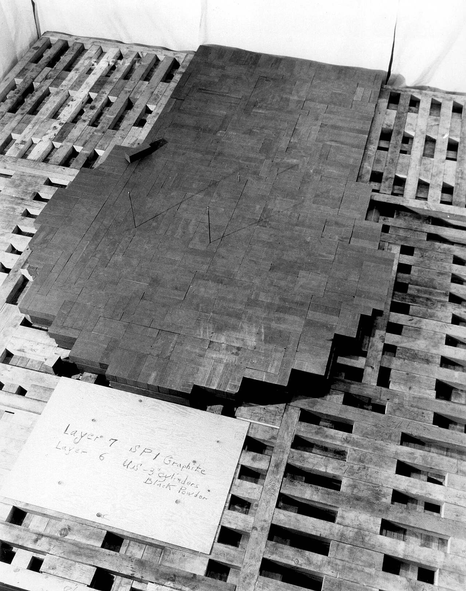
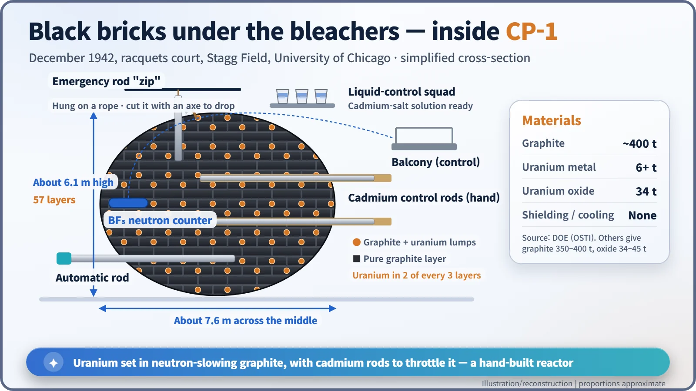
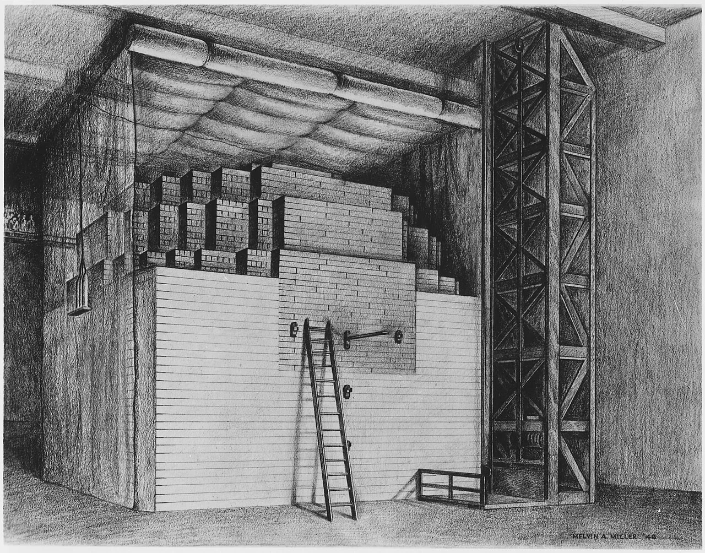
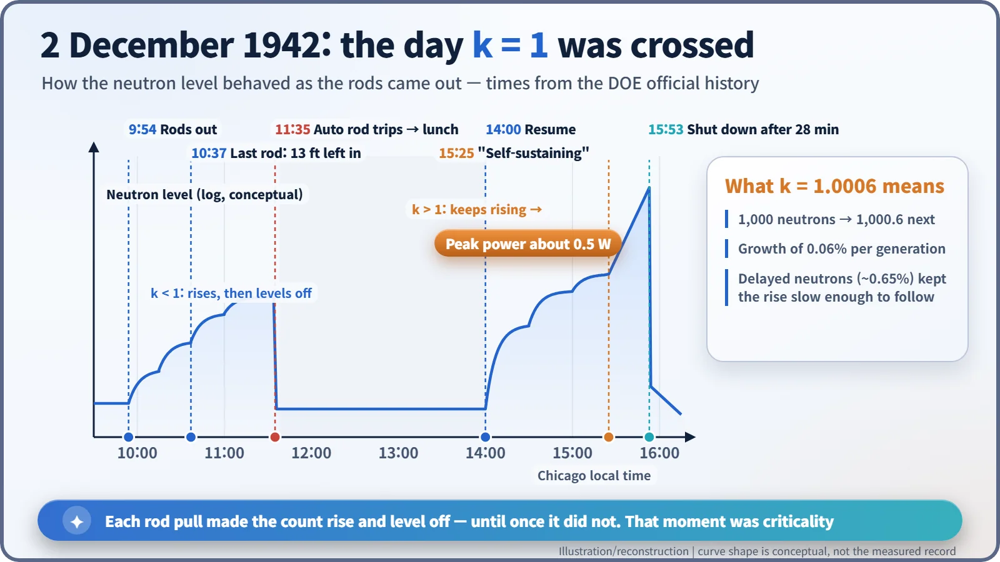

Nuclear History · 091
Critical After Lunch — Chicago Pile-1, the First Man-Made Nuclear Reactor (1942)
Fifty-seven layers of black bricks, cadmium rods nailed to wood, an axe by the rope, and a reaction that finally refused to level off.
On the afternoon of 2 December 1942, under the grandstand of a University of Chicago football field, Enrico Fermi's team pulled the last cadmium rod out of a hand-stacked pile of graphite and uranium until the neutron count stopped levelling off. Chicago Pile-1 ran at about half a watt for 28 minutes, with a multiplication factor of 1.0006. It was the first time anyone had started, and controlled, a self-sustaining nuclear chain reaction.
Lunch first, history later
At 11:35 a.m. on 2 December 1942, in a disused racquets court under the West Stands of Stagg Field at the University of Chicago, a loud clap rang out. An automatic control rod had slammed into a stack of black bricks all by itself. Nothing had gone wrong with the reaction; the safety trip had simply been set too low. According to a story often told, Enrico Fermi (1901–1954), who was running the experiment, announced that he was hungry and sent everyone to lunch. The world's first nuclear reactor experiment paused for more than two hours, and then, that afternoon, history moved. [1]
Why build a pile at all?
By 1939 physicists knew that each uranium fission releases two or three neutrons. The real question was whether those neutrons would go on to cause further fissions, or be swallowed by impurities and lost through the surface first. Paper calculations could not settle it. And the United States wanted reactors that could breed plutonium on an industrial scale, which first required proof that a chain reaction could actually sustain itself in natural uranium and graphite. [2]
Fermi's team had been building small test stacks since 1941 at Columbia University, where the first one reached a multiplication value of only about 0.87. After the work moved to Chicago in 1942, at least 29 such "exponential piles" were built under the same grandstand to refine the materials and the arrangement. [6]
A hand-built reactor: 400 tons of graphite
The plan had been to build in the Argonne Forest outside the city, but industrial disputes delayed the new building. Fermi proposed using the campus instead, and Arthur H. Compton (1892–1962), head of the project in Chicago, approved it without asking the university's president. A reactor in the middle of a city sounds alarming today; Fermi reassured his colleagues that, by his calculations, the chance of a runaway was extremely small. [3] [6]

Stacking began on the morning of 16 November. Walter Zinn and Herbert L. Anderson led crews working 12-hour shifts. According to the Department of Energy's official history, the pile used almost 400 tons of graphite bricks, more than six tons of uranium metal and 34 tons of uranium oxide (other sources give somewhat different figures). In two out of every three layers, holes were drilled into the bricks and lumps of uranium set inside; the remaining layers were pure graphite. There was no radiation shielding and no cooling system. [1] [3]

Graphite is a moderator: it slows neutrons down, and slow neutrons are much better at splitting uranium-235. Cadmium does the opposite job, soaking up neutrons like a sponge, so strips of cadmium sheet nailed to wooden boards became the control rods. The pile was designed as a sphere, but the materials turned out purer than expected, and the goal came into sight before the sphere was complete. The finished pile was a flattened ellipsoid about 6.1 m (20 ft) high and 7.6 m (25 ft) across the middle. On 1 December, Anderson stopped stacking at layer 57. [6]

Three brakes and an axe
Fermi used three sets of control rods: an automatic rod that would drop in by itself, a weighted emergency rod nicknamed "zip" that hung from a rope, and a final rod pulled out by hand, which he described as the reaction's "starter, accelerator, and brake." Norman Hilberry stood by the rope with an axe, and a "liquid-control squad" waited above the pile, ready to flood it with a cadmium-salt solution. The neutron counter had been built by a graduate student, Leona Woods. [1] [4]
3:25 p.m.: the numbers stop levelling off
At 9:54 a.m. the rods began to come out. Each time George Weil eased the last rod out a little further, the counters climbed and then levelled off. The neutron population was still shrinking slightly from one generation to the next. Physicists describe this with the multiplication factor, k: the number of neutrons in one generation divided by the number in the previous one. If k is below 1, the reaction dies away; at exactly 1 it holds steady; above 1 it keeps growing.
Work resumed at 2:00 p.m. At 3:25 p.m. the recorder's pen climbed and did not level off, and Fermi declared: "The reaction is self-sustaining." The value of k was 1.0006 and the power was about half a watt. After 28 minutes, at 3:53 p.m., the emergency rod went back in. (Sources differ slightly on the exact minute of criticality; this account follows the Department of Energy history.) [1]

A k of 1.0006 means that 1,000 neutrons become 1,000.6 in the next generation. Why could people with hand-operated rods keep up? The answer is delayed neutrons. About 0.65% of the neutrons from uranium-235 fission appear seconds to tens of seconds late. Because the excess, 0.06%, was far smaller than that, the rise was leisurely. Every power reactor today is controlled on the same principle.
What half a watt left behind
The wine toast and the coded phone call that followed are a story for another day. CP-1 was later run at about 200 W on 12 December, shut down at the end of February 1943, dismantled and rebuilt in the Argonne Forest as Chicago Pile-2, this time inside concrete shielding. Its lessons fed straight into the X-10 Graphite Reactor at Oak Ridge and the B Reactor at Hanford. General Leslie Groves called it the single most important scientific event in the development of atomic power. [1] [3]
CP-1 was born for a military purpose, yet it was also the first proof that fission could be controlled rather than unleashed. The family tree of every nuclear power plant starts with a pile of black bricks under a football stand.